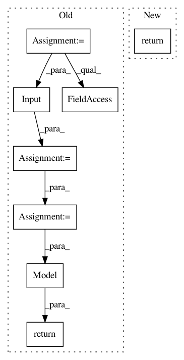

3523a61256c3040aa3f4fd3fc579511f85169212,tests/conftest.py,,_model_1,#Any#,97
Before Change
x_train, y_train, x_test, y_test = _dataset
input_shape = x_train.shape[1:]
input_layer = Input(input_shape)
layer = Conv2D(filters=16,
kernel_size=(5, 5),
strides=(2, 2),
activation="relu",
use_bias=False)(input_layer)
layer = Conv2D(filters=32,
kernel_size=(3, 3),
activation="relu",
use_bias=False)(layer)
layer = AveragePooling2D()(layer)
layer = Conv2D(filters=8,
kernel_size=(3, 3),
padding="same",
activation="relu",
use_bias=False)(layer)
layer = Flatten()(layer)
layer = Dropout(0.01)(layer)
layer = Dense(units=10,
activation="softmax",
use_bias=False)(layer)
model = Model(input_layer, layer)
model.compile("adam", "categorical_crossentropy", ["accuracy"])
history = model.fit(x_train, y_train, batch_size=64, epochs=1, verbose=2,
validation_data=(x_test, y_test))
assert history.history["val_accuracy"][-1] > 0.95
return model
@pytest.fixture(scope="session")
def _model_2(_dataset):
After Change
@pytest.fixture(scope="session")
def _model_1(_dataset):
return get_model_1(_dataset)
def get_model_1(dataset):
x_train, y_train, x_test, y_test = dataset
In pattern: SUPERPATTERN
Frequency: 3
Non-data size: 8
Instances
Project Name: NeuromorphicProcessorProject/snn_toolbox
Commit Name: 3523a61256c3040aa3f4fd3fc579511f85169212
Time: 2020-11-05
Author: bodo.rueckauer@gmail.com
File Name: tests/conftest.py
Class Name:
Method Name: _model_1
Project Name: jhfjhfj1/autokeras
Commit Name: 074d16ac217b9cddc04d093d019c61e393522eb5
Time: 2017-12-30
Author: jhfjhfj1@gmail.com
File Name: autokeras/net_transformer.py
Class Name:
Method Name: copy_conv_model